KIA SPORTAGE NEW
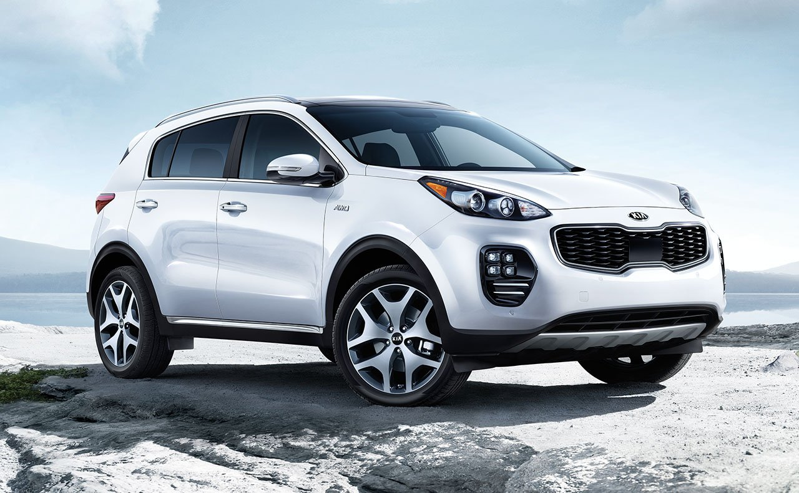
Абсолютно новый Sportage: дерзкий и современный дизайн
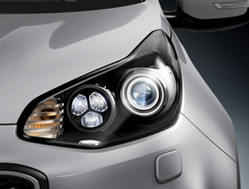 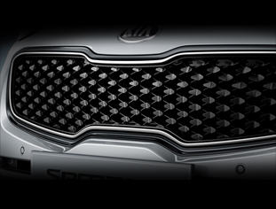 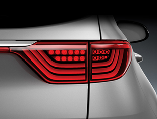
Четвертое поколение Kia Sportage отличается новым смелым дизайном: благодаря контрасту между плавными и острыми линиями, внешний вид автомобиля навевает образ некоторых культовых современных военных истребителей. Официальный дебют одного из самых популярных SUV в мире состоялся на Франкфуртском автосалоне в сентябре 2015 года
Посетители автошоу первыми смогли оценить результаты работы дизайнеров Kia Motors, которые наделили авто решеткой радиатора в стиле «нос тигра», а также эффектными раздельными фарами. В Украине новый Kia Sportage будет представлен также в модификации с пакетом GT Line, экстерьер которой выглядит еще более спортивно благодаря новым светодиодным противотуманным фарам в стиле ice-cube, а также защитным пластинам с покраской под алюминий.
Секреты нового KIA Sportage
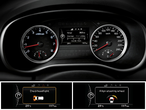 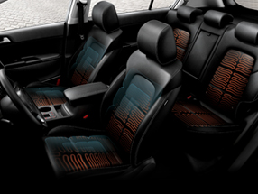 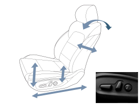
Создавая новое поколение кроссовера Sportage конструкторы Kia Motors тщательно работали над улучшением безопасности и управляемости автомобиля. Достичь этого удалось благодаря увеличению использования высокопрочной стали в конструкции кузова (51% против 18% в SUV прошлого поколения), и улучшенной аэродинамике (коэффициент лобового сопротивления Cd уменьшено с 0,35 до 0,33). Что касается полностью обновленного салона, то он, кроме прогрессивного дизайна и высококачественных материалов отделки, может предложить увеличенное пространство для передних и задних пассажиров, а также набор опций, ранее были доступны только в автомобилях более высокого класса.
Отличник EuroNCAP
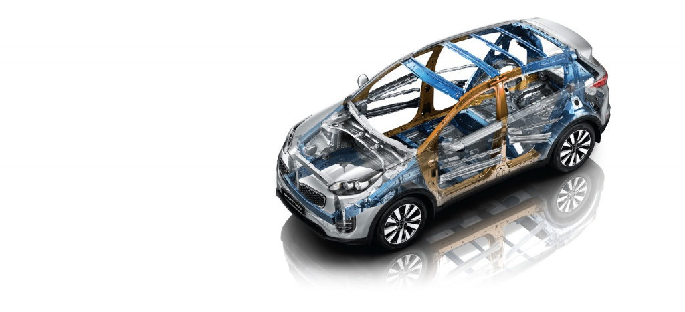
Новый Kia Sportage является одним из наиболее совершенных и безопасных компактных кроссоверов мира. Четвертое поколение модели по итогам тщательных испытаний по методике EuroNCAP получил максимальные пять звезд: 90% за защиту водителя и взрослых пассажиров, 83% за защиту детей, 66% за защиту пешеходов и 71% за работу вспомогательных систем безопасности.
Новые Sportage для украинского рынка уже в базовой комплектации будут иметь 6 подушек безопасности; системы ESP (курсовая устойчивость), ABS (антиблокировочная система), HAC (помощь при движении под гору), TSA (стабилизация движения с прицепом).
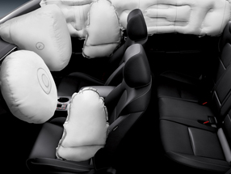 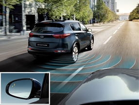 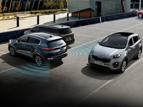
Для того чтобы скачать информацию об автомобиле, нажмите кнопку скачать!
//добавляем кнопку, при нажатии на нее будет предложенно скачать файл